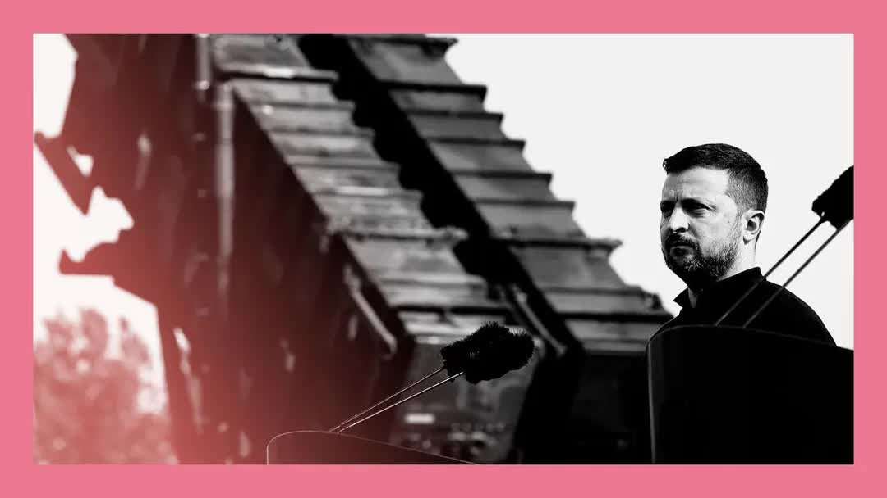

【经济学人播客 Editors' Picks 20250722 转向：唐纳德·特朗普再次改变对乌克兰立场】
Summary: The article discusses Donald Trump's shifting stance on Ukraine, from praising Putin to threatening Russia with economic sanctions and resuming weapons deliveries to Ukraine, highlighting his unpredictability and the potential impact on Ukraine and Europe.
摘要： 文章探讨了唐纳德·特朗普对乌克兰立场的反复变化，从赞扬普京到威胁对俄罗斯实施经济制裁并恢复对乌武器供应，强调了他的不可预测性以及对乌克兰和欧洲的潜在影响。

⏱️ Estimated Reading Time: 6 min.
📚 四级生词 📚 六级生词 📚 雅思生词 📚 托福生词 📚 专八生词 📚 SAT生词 📚 考研生词 📚 GRE生词 📚 高考生词 📚 其它生词
Hello, this is Rosie Blore, co-host of The Intelligence, our daily news and current affairs podcast.
大家好，我是《情报》节目的联合主持人罗茜·布洛尔，这是我们每日新闻与时事播客。
Welcome to Editors' Picks.
欢迎来到“编辑精选”。
We've chosen an article from the latest edition of The Economist that we thought you might enjoy.
我们从最新一期《经济学人》中挑选了一篇文章，认为您可能会喜欢。
Please do have a listen.
请务必收听。
Over the past six months, President Donald Trump has been all over the place on Ukraine.
过去六个月，唐纳德·特朗普总统在乌克兰问题上的立场反复无常。
He said he could end the war in 24 hours.
他曾表示可以在24小时内结束战争。
Then while negotiating with Russia, he threatened to cut off the supplier of weapons to Ukraine.
随后在与俄罗斯谈判时，他威胁要切断对乌克兰的武器供应。
In the past week, he has signalled a new enthusiasm for supporting Ukraine.
过去一周，他又表现出支持乌克兰的新热情。
His spectacular pivot involves ambiguity, theatre and cynicism.
他惊人的转变充满模糊性、戏剧性和讽刺意味。
Yet it creates a pathway for Ukraine and its supporters to stabilize a weakening position.
但这为乌克兰及其支持者稳定日益削弱的局势提供了途径。
They must take it.
他们必须抓住机会。
Mr Trump originally called Vladimir Putin a genius, while blaming Ukraine for the war and humiliating its president in front of the world's press.
特朗普最初称弗拉基米尔·普京为天才，同时指责乌克兰挑起战争，并在全球媒体面前羞辱其总统。
His new position, outlined after a meeting with NATO on July 14th, is rather different.
他在7月14日与北约会晤后概述的新立场却大不相同。
First, Mr Trump says he is disappointed with Russia's leader, who has ignored his and treaties for peace, sent more troops into the meat grinder and reigned missiles on Ukraine's cities.
首先，特朗普表示对俄罗斯领导人感到失望，称其无视他的和平提议，将更多士兵送入绞肉机般的战场，并向乌克兰城市发射导弹。
Second, Mr Trump says he will give Russia 50 days to end the fighting or face economic punishment, with America imposing secondary tariffs on any country that buys Russian exports, mostly its oil.
其次，特朗普表示将给俄罗斯50天时间结束战斗，否则将面临经济惩罚，美国将对购买俄罗斯出口产品（主要是石油）的任何国家实施次级关税。
Finally, America will resume weapons deliveries to Ukraine.
最后，美国将恢复对乌克兰的武器供应。
What to make of the U-turn?
如何看待这一转变？
Mr Trump's fickleness looms large.
特朗普的善变十分明显。
He walked back some of his comments after only a day.
仅一天后他就收回部分言论。
I'm on nobody's side, he said on July 15th.
“我不站在任何一方，”他于7月15日表示。
Having appeared to endorse attacks by Ukraine deep inside Russia, he has told Volodymyr Zelensky not to strike Moscow and says he is not inclined to give Ukraine long-range missiles.
在看似支持乌克兰深入俄罗斯境内的攻击后，他又告诉弗拉基米尔·泽连斯基不要袭击莫斯科，并表示不愿向乌克兰提供远程导弹。
Neither are his threats of severe secondary tariffs credible.
他关于严厉次级关税的威胁也不可信。
In theory, he could impose sanctions that reduced Russia's export earnings without greatly affecting the oil price.
理论上，他可以实施既能减少俄罗斯出口收入又不大幅影响油价的制裁。
But if they were strict enough to choke off the Kremlin's energy exports, the oil price would soar, causing an inflation shock that Mr Trump might find intolerable.
但如果制裁严格到扼杀克里姆林宫的能源出口，油价将飙升，引发特朗普可能难以承受的通胀冲击。
The big buyers of Russia's oil exports are China, 47% and India, 38%.
俄罗斯石油出口的主要买家是中国（47%）和印度（38%）。
Mr Trump has backed away from an all-out trade war with China and is in negotiations with India.
特朗普已避免与中国展开全面贸易战，并正与印度谈判。
Tellingly, investors do not believe in Mr Trump's brinkmanship.
值得注意的是，投资者并不相信特朗普的边缘政策。
After he threatened to cut off Russia, the oil price fell.
在他威胁切断俄罗斯后，油价反而下跌。
Yet one element of America's new stance is valuable.
但美国新立场中有一点很有价值。
The flow of weapons.
武器供应。
Instead of giving American arms to Ukraine as Joe Biden did, Mr Trump wants European governments to buy and donate them.
与乔·拜登直接向乌克兰提供美国武器不同，特朗普希望欧洲政府购买并捐赠武器。
The logic is grubby.
其逻辑并不光彩。
It will be, he says, good business.
他说这将是“好生意”。
Still, by paying for such weapons, Europe could fill military gaps.
尽管如此，通过资助这些武器，欧洲可以填补军事缺口。
Not all European leaders are keen, but they could defray the cost by using frozen Russian state assets.
并非所有欧洲领导人都热衷于此，但他们可以通过使用被冻结的俄罗斯国有资产来分摊成本。
Already Germany has indicated it will buy Patriot missile batteries, which can provide air defense for Ukraine.
德国已表示将购买“爱国者”导弹系统，为乌克兰提供防空支持。
Since it relies on Mr Trump's word, this new arrangement is unreliable.
由于依赖特朗普的承诺，这一新安排并不可靠。
Production bottlenecks mean that even if America is willing and Europe is prepared to write checks, some weapons may run short.
生产瓶颈意味着即使美国愿意且欧洲准备出资，某些武器仍可能短缺。
But it can, by time, allow Europe to raise production of everything from shells to satellites and Ukraine to develop new ways to prevent Russia pummeling civilians, perhaps through defensive drones that neutralize aerial attacks.
但随着时间的推移，这将使欧洲提高从炮弹到卫星等各种武器的产量，并让乌克兰开发新方法（例如用防御性无人机抵消空袭）阻止俄罗斯袭击平民。
If Ukraine can find a way to protect its cities from the air, Mr Putin will be trapped in an exhausting war of attrition.
如果乌克兰能找到保护城市免受空袭的方法，普京将陷入一场消耗战。
Over the past two years, his ground forces have made only meager advances at a huge cost.
过去两年，其地面部队仅以巨大代价取得微弱进展。
Ultimately Europe is rich and capable of containing Russia.
欧洲终究财力雄厚，有能力遏制俄罗斯。
Mr Trump's dream of a quick peace deal has been exposed as a fantasy.
特朗普快速达成和平协议的梦想已被证明是幻想。
Although his word counts for little, Ukraine and Europe must seize on it to create a mechanism that does not require daily presidential decisions to function.
尽管他的承诺无足轻重，乌克兰和欧洲必须借此建立一个无需每日总统决策即可运作的机制。
Thank you for listening to Editors' picks and for being an economist subscriber.
感谢收听“编辑精选”并订阅《经济学人》。
We'll see you back here tomorrow.
明天再见。